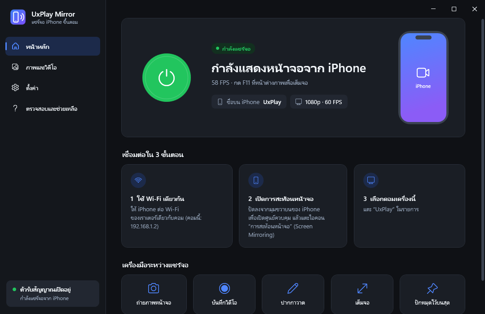
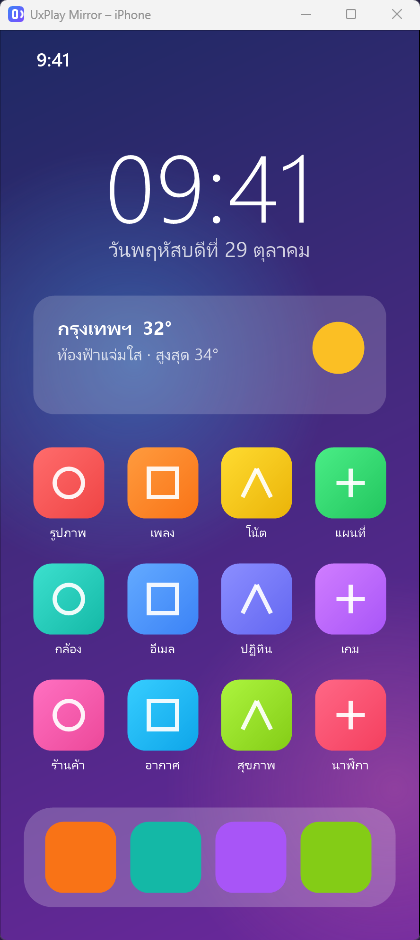
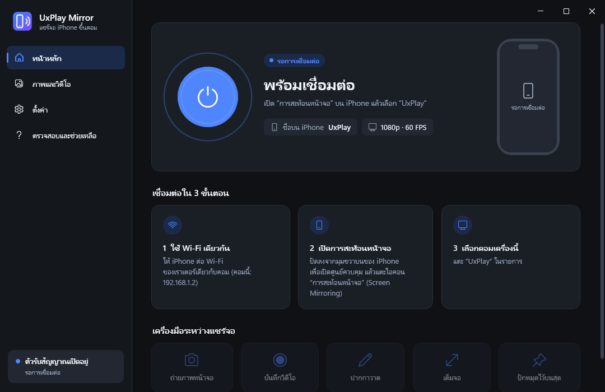

ใช้ AirPlay ที่มีอยู่แล้วใน iPhone และ iPad ไม่ต้องลงแอปเพิ่มในมือถือ ภาพลื่นสูงสุด 60 FPS พร้อมเสียง ถ่ายภาพหน้าจอ อัดวิดีโอ และวาดบนจอได้


ออกแบบให้ใช้ง่ายสำหรับคนไทย ทุกเมนูเป็นภาษาไทย
ถอดรหัสด้วยการ์ดจอ หน่วงต่ำ พร้อมตัวเลข FPS สดที่ iPhone ส่งมาจริง
หมุนเครื่องเป็นแนวนอน/แนวตั้ง หน้าต่างหมุนตาม ไม่มีขอบดำเกิน
กดครั้งเดียว บันทึกเป็นไฟล์และคัดลอกไปวางในแชตได้ทันที
อัดเป็น MP4 ด้วย NVIDIA NVENC หรือ Media Foundation อัดเฉพาะเสียงจาก iPhone
ขีดเขียน ไฮไลต์ ทับภาพจาก iPhone เหมาะกับสอนใช้งานหรือพรีเซนต์
เปิดเพลงผ่าน AirPlay แล้วขึ้นปกอัลบั้ม ชื่อเพลง และเวลาของเพลงสวย ๆ
Ctrl+Alt+S ถ่ายภาพ · Ctrl+Alt+R อัดวิดีโอ · Ctrl+Alt+D ปากกา · Ctrl+Alt+F เต็มจอ
กันคนอื่นในวง Wi-Fi เดียวกันแอบแชร์จอขึ้นคอมคุณ
เช็ก Firewall, เครือข่าย Private และ Smart App Control พร้อมปุ่มพาไปแก้
ภาพจริงจากตัวโปรแกรม (หน้าจอมือถือในภาพเป็นภาพตัวอย่าง)

ทำครั้งเดียว ใช้เวลาประมาณ 10–20 นาที (ระหว่างติดตั้งต้องต่ออินเทอร์เน็ต)
กดปุ่ม ดาวน์โหลดสำหรับ Windows จะได้ไฟล์ UxPlayMirrorSetup.exe
ถ้า Windows ขึ้นหน้าจอสีน้ำเงิน “Windows protected your PC” ให้กด More info แล้วกด Run anyway
ถ้าตัวติดตั้งแจ้งว่า Smart App Control เปิดอยู่ ต้องปิดก่อนจึงจะใช้งานได้ ที่ Windows Security → App & browser control → Smart App Control → Off
ตัวติดตั้งจะลง MSYS2 (ที่ C:\msys64), GStreamer, ดาวน์โหลดและ build UxPlay เวอร์ชันล่าสุด แล้วสร้าง shortcut ให้
ตั้งเครือข่ายของคอมเป็น Private (Settings → Network & internet) และถ้า Windows ถามเรื่อง Firewall ให้ติ๊ก Private แล้วกด Allow
ต่อ Wi-Fi เดียวกับคอม ปัดลงเปิดศูนย์ควบคุม แตะ การสะท้อนหน้าจอ แล้วเลือก UxPlay@ชื่อคอม
ตรวจว่ามือถือกับคอมใช้เราเตอร์เดียวกัน ปิด VPN ชั่วคราว และตั้งเครือข่ายของคอมเป็น Private จากนั้นเปิดหน้า “ตรวจสอบและช่วยเหลือ” ในโปรแกรม จะบอกว่าติดตรงไหนพร้อมปุ่มพาไปแก้
ส่วนใหญ่เกิดจาก Smart App Control ของ Windows 11 บล็อกไฟล์ของ GStreamer ดูวิธีแก้ในขั้นตอนที่ 3 ด้านบน หรือในหน้า “ตรวจสอบและช่วยเหลือ” ของโปรแกรม
แอปที่มีลิขสิทธิ์ (เช่น Netflix) ไม่อนุญาตให้สะท้อนหน้าจอ เป็นข้อจำกัดของแอปนั้น ไม่ใช่ปัญหาของโปรแกรม
วิดีโอเป็นสัดส่วน 16:9 แต่จอ iPhone รุ่นใหม่กว้างกว่า จึงมีขอบดำบนมือถืออยู่แล้ว ใช้สองนิ้วถ่างซูมวิดีโอใน YouTube เพื่อให้เต็มจอ
ซอร์สโค้ดเปิดให้ดูทั้งหมด ตัวติดตั้งลง MSYS2 ไว้ที่ C:\msys64 (เครื่องมือมาตรฐานสำหรับ build โปรแกรมบน Windows) แล้ว build UxPlay จากซอร์สบน GitHub โดยตรง ตัวโปรแกรมอยู่ในโฟลเดอร์ผู้ใช้ ไม่ต้องใช้สิทธิ์ผู้ดูแลระบบ ยกเว้นตอนขออนุญาต Firewall
ไม่ได้ครับ AirPlay ส่งภาพและเสียงได้ทางเดียว Apple ไม่เปิดให้ควบคุมมือถือจากคอม
ไปที่ Settings → Apps แล้วเลือก UxPlay Mirror → Uninstall ภาพและวิดีโอที่บันทึกไว้จะไม่ถูกลบ ส่วน MSYS2 ถอนแยกได้จากรายการ Apps เช่นกัน